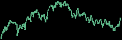
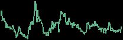
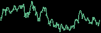
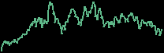
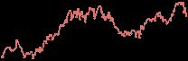
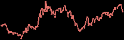
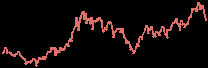
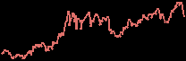
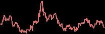

Corporate Sector Intelligence 09:15 · Thu 5 Nov 2026 · news since Wed 04 Nov 09:30 (Zurich) | At a glance Prices as of 09:10 Zurich 1. Nordic Renewables and Power: Ørsted grew nine-month EBITDA by 19% and brought two offshore wind farms into operation; Scana signed a battery storage framework deal with a Norwegian AI data centre; Å Energi lifted underlying profit on high southern Norwegian power prices. 2. Lundin Group of companies: Lundin Gold posted a record quarter at Fruta del Norte and declared US$1.14 of dividends; Lundin Mining cut its Caserones guidance again after storms; the Canadian heavy-oil discount hit its widest since 2018 (IPC). 3. EU-listed oil and gas: Harbour Energy raised its production guidance and added a $150 million buyback; BP sold 5% of Aker BP; Diversified Energy said its Birch deal is on track; Angus Energy won a licence extension at Saltfleetby. |
| 1. Nordic Renewables and Power | Orsted 144.25 1d +6.3% 1m +8.0%YTD +17.9% DKK · last trade 09:10 |  ORSTED.CO · 1 year |
Ørsted's nine-month report showed earnings before interest, tax, depreciation and amortisation (EBITDA), excluding new partnerships and cancellation fees, up 19% to DKK 20.2 billion, and it stays on track for its 2026 guidance. Borkum Riffgrund 3 in Germany and Revolution Wind in the US reached commercial operations, and it cut 2026 gross investment guidance by DKK 5 billion to DKK 45 to 50 billion on payment timing. Profit fell to DKK 2.6 billion on impairments of US projects; the 8.1 gigawatt construction programme remains on schedule and on budget. | Scana 1.45 1d +3.6% 1m +2.8%YTD +2.0% NOK · close 4 Nov |  SCANA.OL · 1 year |
| Å Energi · unlisted | 2. Lundin Group of companies | Lundin Gold 91.28 1d +6.2% 1m +6.0%YTD −15.5% CAD · close 4 Nov |  LUG.TO · 1 year |
It expects the fourth quarter to be the year's lowest on grades and October mill maintenance but stays on guidance; the investment decision on Fruta del Norte South and the mill expansion is due this quarter. | Lundin Mining 31.67 1d +5.9% 1m −9.8%YTD +7.4% CAD · close 4 Nov |  LUN.TO · 1 year |
Lundin Mining's third-quarter results showed copper output of 62,610 tonnes at a cash cost of $2.01 a pound, revenue of $1.11 billion at a record realised copper price of $6.85 a pound and net cash of $237 million. Storms and snowmelt at Caserones in Chile led it to cut that mine's 2026 guidance again, to 105,000 to 115,000 tonnes from 120,000 to 130,000, taking group guidance to 285,000 to 310,000 tonnes (announced yesterday). Management calls the Caserones shortfall deferred, not lost, tonnes; the Vicuña sanction decision is still due before year-end after the San Juan provincial agreement and powerline approval. | International Petroleum 35.80 1d −6.9% 1m +0.9%YTD +44.2% CAD · close 4 Nov |  IPCO.TO · 1 year |
Relevant to IPC's Canadian heavy-oil output, which is priced off Western Canada Select. | 3. EU-listed oil and gas | Harbour Energy 280.00 1d −3.1% 1m +2.6%YTD +42.4% GBp · close 4 Nov |  HBR.L · 1 year |
Harbour Energy's trading update raised 2026 production guidance to 500,000 to 505,000 barrels of oil equivalent per day (boepd), from 490,000 to 500,000, after record nine-month output of 501,000 boepd, and lifted its free cash flow outlook by $800 million to about $2.6 billion. Net debt fell to $5.1 billion, and a further $150 million buyback takes 2026 shareholder returns to at least $1.2 billion. BASF's stake is down to about 16% from about 47% at the start of the year; five more Norwegian projects and the Salamanca pump project in the Gulf of America target investment decisions by year-end. | BP 571.60 1d −3.0% 1m +1.5%YTD +32.1% GBp · close 4 Nov |  BP.L · 1 year |
Aker BP 354.00 1d −2.8% 1m +3.5%YTD +37.8% NOK · close 4 Nov |  AKRBP.OL · 1 year |
| Diversified Energy 1,004.00 1d −2.7% 1m −2.5%YTD −6.6% GBp · close 4 Nov |  DEC.L · 1 year |
Diversified Energy reported third-quarter production of 198,000 boepd, 72% natural gas, with adjusted EBITDA of $256 million and adjusted free cash flow of $153 million, and said its acquisition of Permian producer Birch Resources remains on track to close in the fourth quarter. | Angus Energy 0.18 1d 0.0% 1m −2.7%YTD +7400.0% GBp · close 4 Nov | ANGS.L · 1 year |
| | Corporate Sector Intelligence · primary sources: Oslo Børs NewsWeb, MFN, Nasdaq Nordic, Investegate RNS, company releases. Our view only, not investment advice. |
|